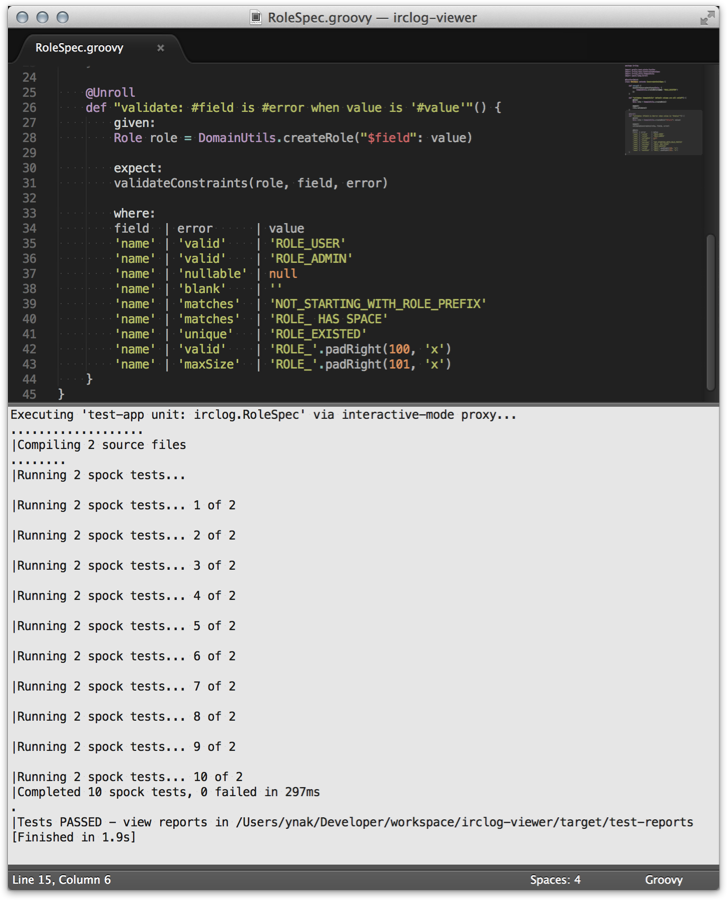
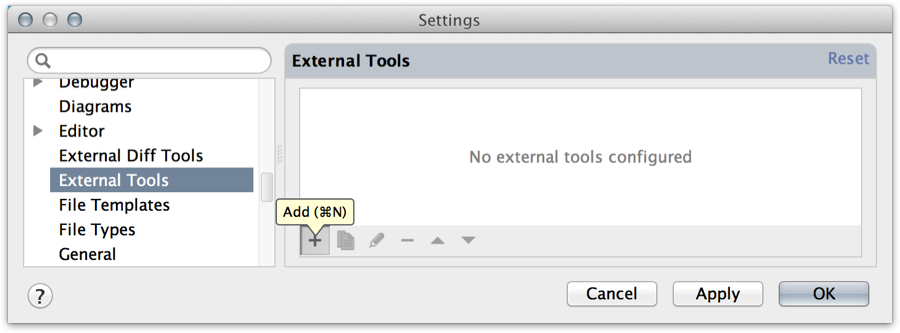
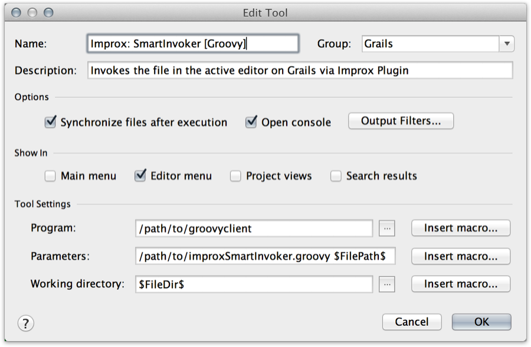
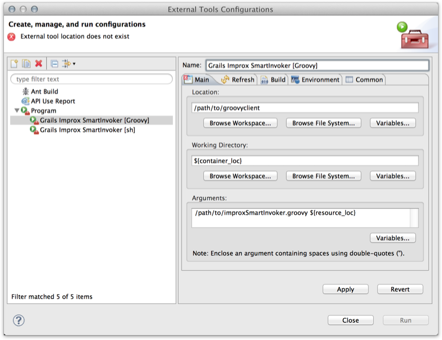
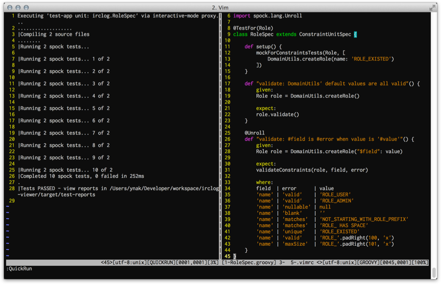

Improx - Interactive Mode Proxy - Reference Documentation
Authors: Yasuharu NAKANO
Version: 0.2
Table of Contents
1 Introduction
"Once interactive mode was available only from console..."1.1 Interactive Mode is awesome! But...
Are you using the interactive mode? It's the one of the greatest features of Grails and the fastest way to execute a Grails command.IDEs, like as IntelliJ IDEA, are very convenient for code formatting, complementation, jumping to a related class, and so on. But, about an execution of a Grails command, especially "test-app", it's still so slow that you tend to miss a rhythm of development. Certainly you can use interactive mode on a console to execute a command faster and it's very very useful actually, but you can't use the interactive mode from IDEs or editors, unfortunately. So you have to frequently switch windows between a interactive mode console and an IDE/editor, while in development.This plugin provides the way of using interactive mode from other process, including IDEs and editors, via TCP.1.2 What can I do with Improx Plugin?
If you install this plugin to your application, you can invoke almost all Grails commands on an interactive mode, which started up in advance on a console, from other processes via a TCP. This means that you can quickly run a test which is opened in you favorite editor or IDE. If you've appropriately set them up, you'd have only to push a key in order to run it.For example, in Sublime Text 2: It has taken only 1.9 sec as total time of the build! Though it's certainly a simple unit test, this is the surprising result.In addition, you can easily make an original build script, for example, to execute 'doc' command and reload a web browser window automatically.In short, this plugin brings you the more convenience and flexibility for Grails application development.1.3 Relationship with GroovyServ
Do you know GroovyServ? It accelerates a feedback cycle for development of Groovy scripts.GroovyServ makes Groovy’s startup time much faster, by pre-invoking Groovy as a server.In software development with script languages, it’s very important that repeat velocity of “try-and-run” is fast enough. It is too long to wait for start-up of Groovy even for 1 second. GroovyServ reduces startup time of the JVM and Groovy significantly. It’s of course dependent on environments, but in most case, it is 10 to 20 times faster than regular Groovy.GroovyServ on GitHubThe improx plugin code-named GrailsServ because it accelerates a feedback cycle for development of Grails application. But the name of "GrailsServ" isn't good because Grails is essentially "server" and it might lead confusion and misunderstanding. So I've given it a more explicit name which shows the architecture of the plugin Yes, this plugin works as just only a proxy of interactive mode.GroovyServ can give you much advantages when you use the plugin because the start-up time of the groovy client scripts of the plugin will be much faster.See also: GroovyServ on GitHub : http://kobo.github.com/groovyserv/
2 Getting Started
This plugin's architecture is very simple. When you execute the grails script ofimprox-start on an interactive mode which run up in advance,
it opens and listens a port (default 8096).
Then, it executes a command on the interactive mode when receiving from a client.It uses a simple protocol on TCP, so you can access by variety clients and even make your own new client.
2.1 Install Client Scripts into your environment
Execute the following command:grails improx-install-resources
improx-resources directory including client scripts is expanded.improx-resources/
└── scripts
├── improxClient.groovy
├── improxClient.sh
├── improxSmartInvoker.groovy
└── improxSmartInvoker.sh$ chmod +x improx-resources/scripts/*.sh
~/.grails/improx or ~/bin.
If you deploy it to an appropriate path, you don't have to install the scripts whenever you use it on new project.
So I recommend that at least it's not under the application project directory.
2.2 Start Server
Run the improx proxy server on interactive mode:grails> improx-start Interactive mode proxy server has started on 8096 port.
It doesn't support not on interactive mode.You can stop the server anytime using
improx-stop command.grails> improx-stop Interactive mode proxy server stopped.
2.3 Execute Command from Client
via HTTP
I don't know what kind of environment you have. So at first, I introduce the most general way to execute a command as client, using HTTP protocol. Improx plugin also supports for HTTP protocol, so you can easily execute a command using it.When you open the following URL on web browser:http://localhost:8096/help
 And a "received" message will be also shown on the console on which
And a "received" message will be also shown on the console on which improx-start has run: You can execute a command as follows:
You can execute a command as follows:http://localhost:8096/list-plugins http://localhost:8096/test-app%20unit:%20sample.SampleUnitTests
You have to make a command line encode by URL encoding when invoking via HTTP.
Shell Script
If shell script is available in your environment, you can use improxClient.sh.improxClient.sh help improxClient.sh test-app unit: sample.SampleUnitTests
Groovy Script
If there isgroovy command in your environment, you can use improxClient.groovy.groovy improxClient.groovy help groovy improxClient.groovy test-app unit: sample.SampleUnitTests
groovyclient of GroovyServ is strongly recommended to execute Groovy script.
If you've installed GroovyServ, you can do the above with groovyclient, as follows:groovyclient improxClient.groovy help groovyclient improxClient.groovy tes-app unit: sample.SampleUnitTests
It needs agroovyserverprocess to rungroovyclient. The first timegroovyclientruns, agroovyserverautomatically starts up. It takes a few extra seconds. Don't get angry. You can much faster run a script after second time.
2.4 Smart Invoker
A simple client as the above isn't convenient very much in order to invoke a test file from editors or IDEs, because it needs a complicated construction of arguments for each test type. So the improx plugin provides smart invoker scripts, which can invoke any.groovy file in an appropriate way.For giving more benefit, you should set up your editor or IDE to be able to integrate with this plugin.
See the next chapter.Shell Script
If shell script is available in your environment, you can use improxSmartInvoker.sh.improxSmartInvoker.sh /path/to/yourApp/test/unit/sample/SampleUnitTests.groovy --[1] improxSmartInvoker.sh /path/to/yourApp/test/integration/sample/SampleIntegTests.groovy --[2] improxSmartInvoker.sh /path/to/yourApp/test/functional/sample/SampleFuncTests.groovy --[3] improxSmartInvoker.sh /path/to/scriptDir/myTribialScript.groovy --[4]
[1]invokes 'test-app unit: sample.SampleUnitTests' on the interactive mode.[2]invokes 'test-app integration: sample.SampleIntegTests' on the interactive mode.[3]invokes 'grails test-app functional: sample.SampleFuncTests' as new standalone Grails process.[4]invokes 'groovy /path/to/scriptDir/myTribialScript.groovy' as a normal Groovy script. If you've istalled GroovyServ, thegroovyclientis automatically used instead ofgroovycommand.
Groovy Script
If there isgroovy command in your environment, you can use improxSmartInvoker.groovy.groovy improxSmartInvoker.groovy /path/to/yourApp/test/unit/sample/SampleUnitTests.groovy --[1] groovy improxSmartInvoker.groovy /path/to/yourApp/test/integration/sample/SampleIntegTests.groovy --[2] groovy improxSmartInvoker.groovy /path/to/yourApp/test/functional/sample/SampleFuncTests.groovy --[3] groovy improxSmartInvoker.groovy /path/to/scriptDir/myTribialScript.groovy --[4]
[1]invokes 'test-app unit: sample.SampleUnitTests' on the interactive mode.[2]invokes 'test-app integration: sample.SampleIntegTests' on the interactive mode.[3]invokes 'grails test-app functional: sample.SampleFuncTests' as new standalone Grails process.[4]invokes 'groovy /path/to/scriptDir/myTribialScript.groovy' as a normal Groovy script. If you've istalled GroovyServ, thegroovyclientis automatically used instead ofgroovycommand.
3 Integration with Editors and IDEs
If the editor which you uses supports for external tools, you can immediately execute the code on the current editor by one action. To do it, you have to set up something.3.1 IntelliJ IDEA
External Tools
- Open Settings dialog from "Preferences" menu.
- Select "External Tools" at left pane.
- Click the below "+" button to show "Edit Tool" dialog: 
- Set the fields as follows if shell script is available in your environment:
Field Value Remarks Name Improx: SmartInvoker [sh]Group GrailsProgram /path/to/improxSmartInvoker.shParameters $FilePath$Working directory $FileDir$ Else:
Else:
Field Value Remarks Name Improx: SmartInvoker [Groovy]Group GrailsProgram /path/to/groovyclientYou can use normal groovycommand, but it needs a globalJAVA_HOMEenvironment variable and your patience.Parameters /path/to/improxSmartInvoker.sh $FilePath$using a white space as delimiter Working directory $FileDir$ - Click "OK" button to save.
Keymap
- Open Settings dialog from "Preferences" menu.
- Select "Keymap" at left pane.
- Right-click "External Tools > Grails > Improx: SmartInvoker (which you want)" item at right pane and select "Add Keyboard Shortcut" item:

- Push your favorite key at "First Stroke" field on the "Enter Keyboard Shortcut" dialog:

- Click "OK" button to save.
Try to run
- Open a test class in the editor.
- Push the key which you set, for example,
F9. - Improx plugin run only the active test file and output the result to "Run" view in real time:

In case of using GroovyServ, you should run groovyserver command at once in advance.
3.2 Eclipse (STS/GGTS)
External Tools
- Open "External Tools Configurations" dialog from "Run > External Tools > External Tools Configurations..." menu.
- Right click on "Program" item at left pane and select "New" item:

- Set the fields as follows if shell script is available in your environment:
Field Value Remarks Name Grails Improx SmartInvoker [sh]Location /path/to/improxSmartInvoker.shWorking Directory ${container_loc}$Arguments ${resource_loc}$ Else:
Else:
Field Value Remarks Name Grails Improx SmartInvoker [Groovy]Location /path/to/groovyclientYou can use normal groovycommand, but it needs aJAVA_HOMEenvironment variable at "Environment" tab and your patience.Working Directory ${container_loc}$Arguments /path/to/improxSmartInvoker.groovy ${resource_loc}$using a white space as delimiter - Click "OK" button to save.
Try to run
- Open a test class in the editor.
- Open "External Tools Configurations" dialog from "Run > External Tools > External Tools Configurations..." menu.
- Select "Grails Improx SmartInvoker (which you want)" item at left pane and click "Run" button.
- Improx plugin run only the active test file and output the result to "Console" view in real time:

In case of using GroovyServ, you should run groovyserver command at once in advance.
After second time, you can easily run the external tool from the submenu of "Run > External Tools" .
3.3 Sublime Text 2
Build System
- Select "Tools > Build System > New Build System..." menu to open new file.
- Edit as follows and save the file as
Groovy.sublime-build(inPackages/Userdirectory as default).
{
"cmd": [
"/path/to/improxSmartInvoker.sh",
"$file"
],
"file_regex": "\\((.*?):([0-9]*)\\)",
"selector": "source.groovy"
}{
"cmd": [
"/path/to/groovyclient", // OR /path/to/groovy
"/path/to/improxSmartInvoker.groovy",
"$file"
],
"file_regex": "\\((.*?):([0-9]*)\\)",
"selector": "source.groovy"
}Try to run
- Open a test class in the editor.
- Select "Tools > Build" menu (or push a shortcut key, like
super+b) - Improx plugin run only the active test file and output the result to Bulid Results pane in real time:
In case of using GroovyServ, you should run groovyserver command at once in advance.
3.4 Vim + QuickRun
quickrun.vim
- Install quickrun.vim plugin if you hasn't done so. (cf. Invoking Groovy Script Directly on Vim using quickrun.vim and GroovyServ)
- Add the following lines into your
.vimrcand save.
let g:quickrun_config = {}
let g:quickrun_config.groovy = {'command' : '/path/to/improxSmartInvoker.sh', 'cmdopt': ''}let g:quickrun_config = {}
let g:quickrun_config.groovy = {'command' : '/path/to/groovyclient', 'cmdopt': '/path/to/improxSmartInvoker.groovy'}Try to run
- Open a test class in the editor.
- Execute ex command
:QuickRun(or type<Leader>r.) - Improx plugin run only the active test file and output the result to a buffer after it completely finishes: 
In case of using GroovyServ, you should run groovyserver command at once in advance.
4 Advanced Topics
4.1 Communication Protocol
4.1.1 Standard Protocol
Theimprox-start command opens and listens a TCP port as a server.Request from Client to Server
A client sends a command line with a line separator as request.COMMAND
help
test-app unit: sample.SampleUnitTests
Response from Server to Client
While a server is sending a response, a client can read the response from a keep-aliving socket. When the server finishes sending all response to the client, the socket will be closed by the server. The client knows that the session is done by closing the socket.4.1.2 HTTP Protocol
The improx sever also supportsGET method of HTTP protocol.GET /COMMAND HTTP/1.0
GET /COMMAND HTTP/1.1
COMMAND- a command line which is encoded by URL encoding.
GET /help HTTP/1.1
GET /test-app%20unit:%20sample.SampleUnitTests HTTP/1.1
curl, wget, Chrome, Firefox and even Internet Explorer.curl http://localhost:8096/help curl http://localhost:8096/test-app%20unit:%20sample.SampleUnitTest
You might need a --noproxy '*' option if you've set environment variables for http proxy.
Web browser often requests for favicon:GET /favicon.ico HTTP/1.1
favicon.",
improx server returns a "Command not found" error message instead of causing an actual error.
4.2 Unsupported Commands
As same as interactive mode
- install-plugin
- uninstall-plugin
Special built-in commands
- create-app
- quit
- stop-app
- exit and
- !(shell command)
Using threads complexly
Because a start-app command causes a new thread to monitor the user input on interactive mode. The issue seems to be caused by handling the old thread.- start-app